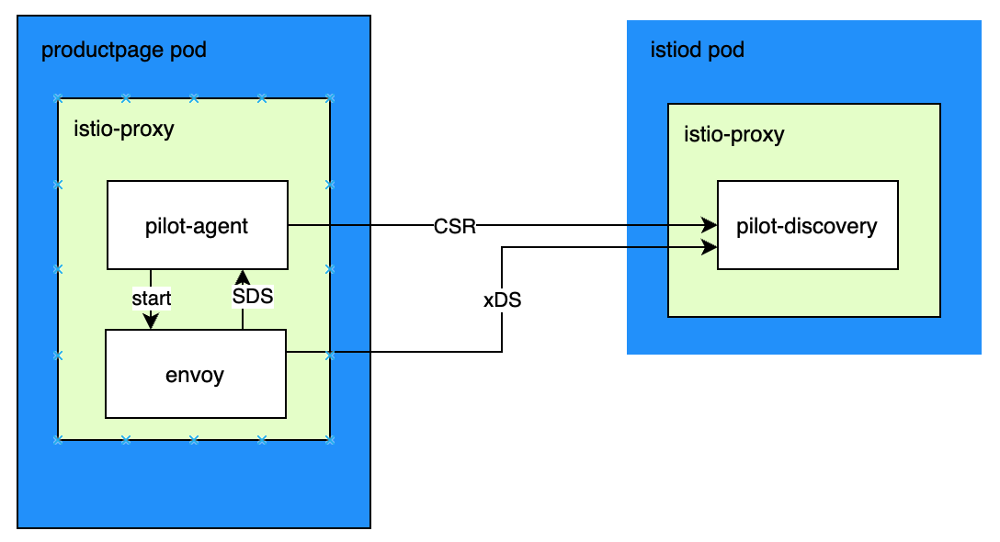

Istio pilot-agent 源码解析

文章目录
pilot-agent 源码
整体流程
整体逻辑如下图，简单来说分为以下几步：
- pilot-agent 启动后，生成私钥和 CSR（证书签名请求），用 CSR 请求 istiod 获取工作负载证书，ROOTCA 根证书是挂载在本地目录的
- pilot-agent 创建 envoy 启动配置文件，使用 cmd 方式启动 envoy，启动配置文件中包含 istiod 的地址，pilot-agent SDS（secret discovery service）服务的 UDS（unix domain socket）地址
- envoy 请求 SDS，获取私钥、工作负载证书、ROOTCA 根证书，并请求 istiod 获取 XDS 动态配置（经过 pilot-agent 转发和 istiod 建立的长连接）
- 如果服务器证书有更新，pilot-agent 收到推送的更新，会经过 UDS 发给 envoy

pilot-agent 命令
pilot-agent 是用来启动 envoy 的，可以用在两种场景：
- 应用容器的边车代理中：启动命令为“pilot-agent proxy sidecar xx”
- Gateway pods 中转发流量：启动命令为“pilot-agent proxy router xx”
pilot-agent 在启动时会从 istiod 中获取 envoy 部分配置来启动 envoy，等 envoy 启动后，envoy 和 istiod 连接动态获取 XDS 配置。pilot-agent 使用 cobra 来启动服务的，这里只关注 proxy 子命令逻辑。
|
|
istio-agent 下的 Agent
Agent 承载了本地 SDS 和 XDS 服务发现的功能，其定义和运行逻辑如下：
|
|
initSdsServer
initSdsServer 是初始化 SDS 服务发现，在 newSecretManager 函数中，获取了集群的根证书、本地服务器证书、私钥等。这里逻辑是，生成私钥和 CSR，向 istiod 发送 CSR，istiod 根据请求的服务身份签发证书。查看 sidecar 的日志中，对于 tlsOpts.RootCert 有打印“Using CA istiod.istio-system.svc:15012 cert with certs: var/run/secrets/istio/root-cert.pem”，结合 sidecar 的 pod 描述看，CA 根证书实际是从 istio-system 空间的 istio-ca-root-cert cm 中获取的，而 cm 这个值从手动创建的 cacerts secret 中获取的。
|
|
这里会创建 CitadelClient 用来请求 Citadel 模块，SecretManagerClient 里面会调用 CitadelClient 的 CSRSign 方法，这里关注下初始化和 CSRSign 方法逻辑：
|
|
istiod 服务端 CreateCertificate
在上面的 client 中可以看到请求的 istiod 接口是“istio.v1.auth.IstioCertificateService/CreateCertificate”，找到对应的服务端处理逻辑如下：
|
|
上面最终会调用到下面的 server.CreateCertificate 函数：
|
|
这里会调用到：
|
|
其中 keyCertBundle.GetAll() 逻辑如下，其中 ca.KeyCertBundle 由 NewVerifiedKeyCertBundleFromFile 函数创建：
|
|
SecretManagerClient
用来生成私钥和 CSR，并请求 pilot 的证书中心 Citadel 获取证书，会获取两个特定名称的证书：
- default：表示工作负载的 spiffe 证书，即本地 envoy 使用的证书
- ROOTCA：集群根证书，用来校验其他服务证书
|
|
SDS Grpc 服务
上面的 sds.NewServer 是创建通过 UDS 暴露的 grpc SDS 服务器，其定义如下。其中 OnSecretUpdate 函数，在 secret 有更新时，在 SecretManagerClient.OnSecretUpdate 中调用。
|
|
sdsservice
sdsservice 实现了 envoy SDS API。
|
|
RegisterSecretDiscoveryServiceServer
主要是注册 grcp 的方法，具体方案名称如下：
|
|
XdsProxy
XdsProxy 代理所有 envoy 到 istiod 的 XDS 请求（为啥 envoy 不直接连接 istiod？？看启动配置中有 istiod 配置），即连接逻辑为 envoy<->XDS Proxy<->istiod，此外还允许 agent 内部的子系统可以和 istiod/envoy 通信。目的是将所有到 istiod 和 envoy 的 xds 相关连接，用多个 grpc 流统一到单个 tcp 连接中。
在 handleStream 函数中，涉及到背压流控，即 XdsProxy 充当了管道，连接 envoy 和 istiod，两端的处理速度不一样会导致阻塞，参考 背压与流量控制 了解。
|
|
envoy agent
envoy 目录下的 Agent 结构，用于管理运行 envoy 命令的结构 Proxy，负责 Proxy 的启动和清理。
|
|
envoy proxy
envoy 目录下 envoy 结构体实现了 Proxy 接口，用于组装参数，启动 envoy 命令。在上面的 Agent 结构中会调用 envoy 结构的 Run 和 Cleanup 函数。
|
|
istio 证书逻辑
pilot-agent 代码中主要涉及到证书和 XDS，这里再根据实际的配置实例说明下 istio 的证书逻辑。Istio 使用 X.509 证书安全地为每个工作负载提供强身份，应用 sidecar 容器中的 istio-agent 会负责密钥和证书的自动更新，流程图如下：

Istio 通过下面流程来提供密钥和证书：
- istiod 提供一个用于接收 CSRs（证书签名请求）的 grpc 服务
- 当 istio-agent 启动时，创建私钥和 CSR，将带有证书的 CSR 发送给 istiod
- istiod 中的 CA（认证中心）校验 CSR 中的证书，成功后就签署 CSR 以生成证书
- 当工作负载启动后，envoy 通过 SDS（secret 服务发现）API 来请求证书和密钥
- istio-agent 发送私钥和从 istiod 中收到的证书给 envoy
- istio-agent 监视负载的证书过期时间，一旦过期则重复上面的流程
istio 提供了两种类型的认证器：
- 对等认证：用于服务对服务身份验证，基于 mTLS
- 请求认证：用于终端用户认证，校验请求的证书，基于 JWT token
在认证中会多次提到主题备用名称（Subject Alternative Name，缩写 SAN），允许在安全证书中使用 subjectAltName 字段将多种值与证书关联，即为单个 SSL 证书指定其他主机名。
需要注意的是，这里使用的是 mTLS，即双向 TLS。对 Web 服务的访问一般使用单向 TLS，只需要服务端提供身份证明，如果服务端需要验证客户身份时，可以在代码中使用密码、token、双因子认证等方式认证。而双向 TLS 需要同时校验服务端和客户端的身份，运行在应用程序之外，不需要修改应用程序。
sidecar 证书配置
通过下面的命令导出 envoy 的完整配置：
|
|
envoy 配置的 SDS 服务发现地址配置如下，其中 pipe 设置的是 unix domain socket 地址，这是 pilot-agent 提供的 grpc 服务，两个服务在同一个容器中，因此使用的 socket。
|
|
在 enovy 边车配置中，有两处需要通过 SDS 来配置证书
- Inbound Listener，用于接收下游的请求对外提供服务，设置了类型为 DownstreamTlsContext 的 tls 传输协议，里面指定了通过 SDS API 获取的 tls 证书。本地做服务器使用证书逻辑为：
- default 证书：客户端连接时，向请求方发送 default 证书公钥，自己用 default 证书私钥，来进行 TLS 的认证
- ROOTCA 证书：客户端连接时，用 ROOTCA 证书校验客户端的证书，并校验客户端证书中的 SAN（安装 Istio 时通过参数 values.global.trustDomain 指定了信任域）
- Outbound Cluster：用于请求上游服务器，设置了 upstreamTlsContext 中的配置，里面设置了客户端证书、私钥，以及验证上游服务器端的 CA 根证书。本地做客户端使用证书逻辑为：
- default 证书：连接服务端时，向服务端发送 default 证书公钥，用来证明自己的身份
- ROOTCA 证书：连接服务端时，用 ROOTCA 证书校验服务端的证书，并校验服务端证书中的 SAN
先来看下 Inbound Listener 相关配置：
|
|
再来看下 Outbound Cluster 相关配置如下所示，sleep pods 的 enovy 通过名为“outbound|5000||helloworld.sample.svc.cluster.local”的 cluster 访问上游 helloworld 服务，因此需要在该 cluster 上配置客户端证书以及验证服务器端证书的 CA 根证书。在这里我们需要注意的是，Envoy 在验证服务器端证书时会同时验证证书中的 主题备用名称（Subject Alternative Name） 字段。该字段中设置的是 helloworld 服务 Pod 关联的 Service Account 名称。
|
|
因为这里的 helloworld 服务的 deploy 中没有设置 serviceAccount，因此默认为 false，可以查看环境的 serviceAccount 有 default 和 sleep：
|
|
在配置中可以看到通过 SDS 服务器获取到的证书，配置如下：
|
|
上面配置中，名为 default 的证书是当前服务的证书，证书中的 SAN 使用了该服务对应的命名空间下的 serviceaccount；名为 ROOTCA 的证书是集群的根证书，可以用于认证各个服务的证书。不同的服务使用的 default 证书不同，但使用的 ROOTCA 证书是相同的。(如何导出 default 和 ROOTCA 证书，分别对应下面的 pod.crt 和 root-cat.crt)
Gateway 证书配置
Gateway 中使用的容器和 sidecar 一样，也是 pilot-agent 和 envoy 进程组成。Gateway 分为 Ingress Gateway 和 Egress Gateway，分别负责集群入向和出向流量，其证书配置逻辑和 sidecar 的差别如下：
- Ingress：做为服务端和 sidecar 有差异，使用的服务器端证书和私钥，一般是由一个权威 CA 或者第三方 CA 签发
- Egress：做为客户端和 sizecar 有差异，外部服务器采用了 TLS，需要配置 CA 根证书来进行验证，这个 CA 根证书一般由权威 CA 或者第三方 CA 签发
参考
文章作者 yefengzhichen
上次更新 2023-02-03